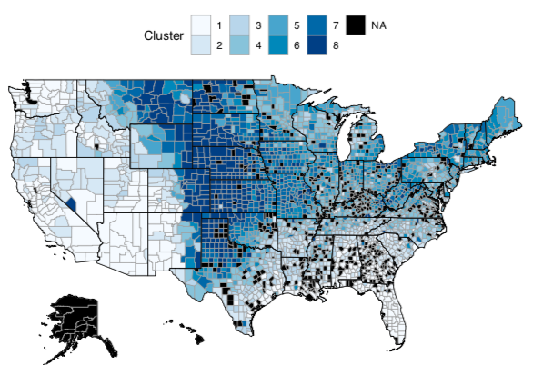

Weather Variability
I recently had a conversion with a friend about how Indianapolis has 'weird weather' where it can be snowing one day and sunny the next. I wondered if this was true - whether the Midwest has larger differences day-to-day weather changes compared to other areas of the United States. Instead of guessing, I decided to perform the analysis!
Data
I downloaded daily weather data from the NOAA Climate Data Online dataset repository. The dataset included maximum temperature readings from over 8,000 weather stations across the United States.
Analysis
I calculated the average successive variability (ASV) for each weather station in the dataset. ASV is defined as the average absolute difference between successive values. In R, this looks like:
asv <- function(x){
x <- x[!is.na(x)]
v <- NULL
for (i in seq(1,length(x)-1)){
v[i] <- abs(x[i+1] - x[i])
}
return(mean(v))
}
I then binned the ASV values into 8 categories in order to see which counties had the highest variability.
The difficulty, however, was converting longtitude and latitude into counties. Luckily a StackOverflow thread made this an easy task.
library(sp)
library(maps)
library(maptools)
latlong2county <- function(pointsDF) {
# Prepare SpatialPolygons object with one SpatialPolygon
# per county
counties <- map('county', fill=TRUE, col="transparent", plot=FALSE)
IDs <- sapply(strsplit(counties$names, ":"), function(x) x[1])
counties_sp <- map2SpatialPolygons(counties, IDs=IDs,proj4string=CRS("+proj=longlat +datum=WGS84"))
# Convert pointsDF to a SpatialPoints object
pointsSP <- SpatialPoints(pointsDF, proj4string=CRS("+proj=longlat +datum=WGS84"))
# Use 'over' to get _indices_ of the Polygons object containing each point
indices <- over(pointsSP, counties_sp)
# Return the county names of the Polygons object containing each point
countyNames <- sapply(counties_sp@polygons, function(x) x@ID)
countyNames[indices]
}
Results
A choreopleth map of the results is below. The region with the most variability was clearly the Midwest United States. The highest bin had ASV values ranging from 9-17 degrees fahrenheit. In other words, the day-to-day variability was on average 17 degrees!
Overall, this was a fun and quick exercise that showed the Midwest US has the largest weather variability compared to other regions of the United States.
